If you don't want to print now,
Probability describes situations where a random sample is selected from a population. It is also used to model a variety of other situations involving randomness.
Tennis match
A simple model for a tennis match between two players, A and B, assumes that:
A more complex model might introduce more parameters to relax the assumption of independence.
Simulation
For any values of π1 and π2, we could randomly generate the results of successive points until a match was complete.
This generates an instance of the model and is called a simulation.
Repetitions of a simulation
Repeating a simulation and observing the variability in the results can give insight into the randomness of the system's behaviour.
Model for sport league
Consider a sports league of 10 teams in which each team plays each other twice and:
| Points from a match = | 3 if team wins 1 if team draws 0 if team loses |
We will model the league with a simple model for the results of individual matches. In it, team A has over twice the probability of winning than losing, but all other teams are equally matched.
Simulation
This model can be used to randomly generate the results of all 90 matches in the league.
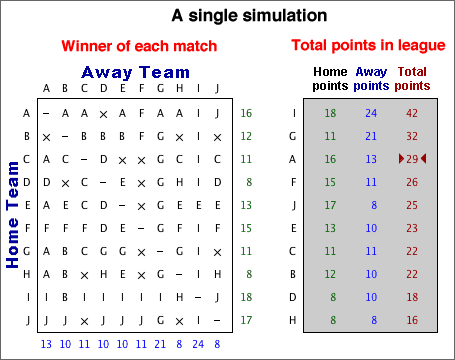
Repeating the simulation 100 times gives the following results:
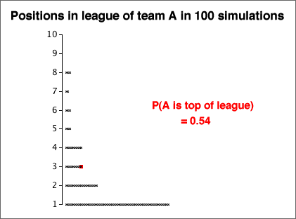
Despite team A being so much better than the other teams, the simulation shows that it has little more than 50% chance of ending the season on top of the league.
English Premier Soccer League in 2008/9
The table below shows the points gained by all teams in the English Premier Soccer League at the end of the 2008/9 season.
| Team | Pts | |
| 1 | Manchester United | 90 |
| 2 | Liverpool | 86 |
| 3 | Chelsea | 83 |
| 4 | Arsenal | 72 |
| 5 | Everton | 63 |
| 6 | Aston Villa | 62 |
| 7 | Fulham | 53 |
| 8 | Tottenham Hotspur | 51 |
| 9 | West Ham United | 51 |
| 10 | Manchester City | 50 |
| 11 | Wigan Athletic | 45 |
| 12 | Stoke City | 45 |
| 13 | Bolton Wanderers | 41 |
| 14 | Portsmouth | 41 |
| 15 | Blackburn Rovers | 41 |
| 16 | Sunderland | 36 |
| 17 | Hull City | 35 |
| 18 | Newcastle United | 34 |
| 19 | Middlesburgh | 32 |
| 20 | West Bromwich Albion | 32 |
Evidence of skill?
A quarter of the matches in 2008/9 were draws, so we will conduct a simulation with a model in which all teams are equally matched and:
From each simulated league, we will summarise the spread of points at the end of the season using both their range and their standard deviation. After 100 simulated leagues, these measures of spread are shown below.
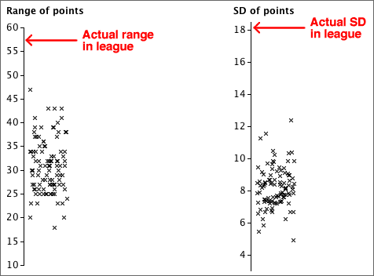
The actual spread of points in the 2008/9 league was much higher than those that appeared in the simulations with equally matched teams, indicating that there was indeed a difference between the skill levels of the best and worst teams in the league.
Interpreting a graphical summary of a sample
Simulations can also help us to assess features such as outliers, clusters or skewness in a data set by examining how often they appear in random samples from a population without such features.
In particular, we can examine variability in samples from a normal distribution that closely matches the shape of the data set.
The amount of skewness in the the actual data (top) is rarely seen in simulated normal samples (such as that shown above). This informally suggests that the the population underlying the data really is skew and not symmetric.
Random values
Simulations are conducted by generating random values from the probability distributions in the model.
A computer program should normally be used to generate random values. The program Excel contains functions that can be used.
Generating categorical and numerical values is usually based on random values that are equally likely to take any value between 0 and 1. Such a value is said to come from a rectangular (or uniform) distribution between 0 and 1 and has the probability density function shown below.
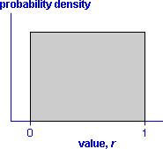
A value can be generated from a rectangular distribution with the Excel function "=RAND()" or, by hand, by generating a sequence of random digits (e.g. by rolling a 10-sided die).
Generating a categorical value
A random category can be generated from a rectangularly distributed random value, r .
If P(success) is denoted by the symbol π, then a success will be generated if r is less than π. This can be generalised as illustrated in the diagram below:
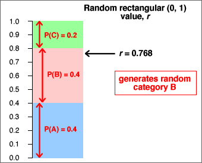
Generating a continuous numerical value
There are several algorithm that can efficiently generate random values from continuous distributions. For example, the Excel function "=NORMSINV(RAND())" generates a random value from a normal distribution with µ = 0 and σ = 1.
The following method is simple to explain but is not recommended for general use.
Consider the diagram below which encloses the distribution's probability density function with a rectangle.
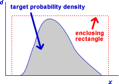
A random position within the rectangle is generated with a random rectangular horizontal and vertical positions. If it lies within the density function, the x-coordinate is the generated value. Otherwise more positions within the rectangle are generated until a point is found within the density function.
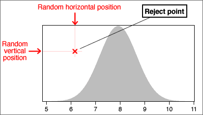
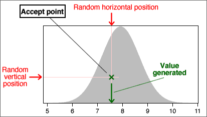
Data sets with two categorical variables
Bivariate categorical data sets are usually summarised with a contingency table.
For example, a study examined 62 patients who had been given a prescription medicine for some condition. Each patient was classified by whether they had complied with the treatment prescribed and by racial group:
| Race | Compliers | Non-compliers | Total |
|---|---|---|---|
| White | 13 | 10 | 23 |
| Non-white | 13 | 26 | 39 |
| Total | 26 | 36 | 62 |
Joint probabilities
Bivariate categorical data can be modelled as a random sample from an underlying population of pairs of categorical values. The population proportion for each pair (x, y) is denoted by pxy and is called the joint probability for (x, y).
In games of chance, we can often work out the joint probabilities. For example, if a gambler draws a card from a shuffled deck and also tosses a coin, there are eight possible combinations,
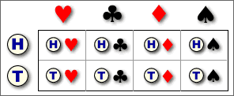
Since these are equally likely,
phead, heart = phead, club = ... = ptail, spade = 1/8 = 0.125
Interest in the model
In practice, we usually only have a random sample (summarised by a contingency table) and do not know the underlying joint probabilities. The sample proportions however provide estimates.
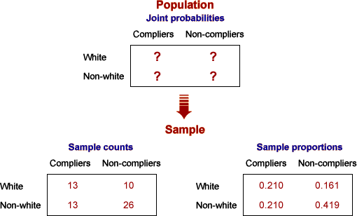
Probabilities for a single variable
A model for two categorical variables is characterised by the joint probabilities pxy.
The marginal probability, px, for a variable X is the proportion of (x, y) pairs in the population with X = x . This can be found by adding all joint probabilities for pairs with this x-value.
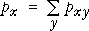
There is a similar formula for the marginal probabilities of the other variable,
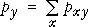
Example
In the following example, the marginal probabilities for X are the row of totals under the table, and the marginal probabilities for Y are the column of totals on the right.
| Variable X | ||||
|---|---|---|---|---|
| Variable Y | X = A | X = B | X = C | Total |
| Y = 1 | 0.2576 | 0.1364 | 0.1212 | 0.5152 |
| Y = 2 | 0.0909 | 0.0758 | 0.0152 | 0.1818 |
| Y = 3 | 0.0455 | 0.0758 | 0.0606 | 0.1818 |
| Y = 4 | 0.0152 | 0.0303 | 0.0758 | 0.1212 |
| Total | 0.4091 | 0.3182 | 0.2727 | 1.0000 |
Probabilities in a sub-population
Conditional probabilities for Y, given X = x
The general definition of the conditional probabilities for Y given that the value of X is x is
| 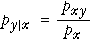 |
They can be found by rescaling of that row of the table of joint probabilities (dividing by px) so that the row sums to 1.0.
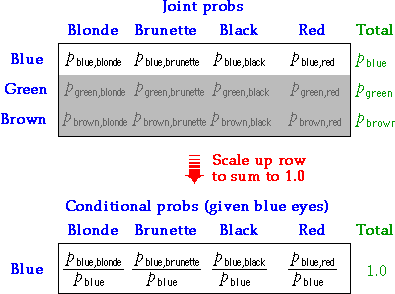
Two sets of conditional probabilities
Conditional probabilities for X given that Y has the value y are defined in a similar way:
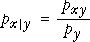
You should be careful to distinguish between px | y and py | x.
| The probability of being pregnant, given that a randomly selected person is female would be fairly small. The probability of being female, given that a person is pregnant is 1.0 !! |
Proportional Venn diagrams
A proportional Venn diagram is drawn from the marginal probabilities of one variable and the conditional probabilities for the other variable,
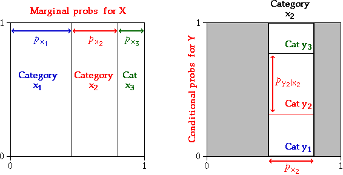
Rewriting the definition of conditional probabilities,
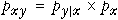
The area of any rectangle in the diagram therefore equals the joint probability of the categories it represents.
An alternative proportional Venn diagram can be drawn from the marginal probabilities of Y and the conditional probabilites of X given Y. The area for the rectangle corresponding to any (x, y) is its joint probability, pxy.
Example
The table below is based on the world population in 2002, categorised by region and by age group. It shows the joint probabilities for a randomly chosen person being in each age/region category.
| Age | |||
|---|---|---|---|
| 0-19 | 20-64 | 65+ | |
| Africa and Near East | 0.085 | 0.073 | 0.006 |
| Asia | 0.215 | 0.315 | 0.035 |
| America, Europe and Oceanea | 0.084 | 0.158 | 0.030 |
The two proportional Venn diagrams are shown below.
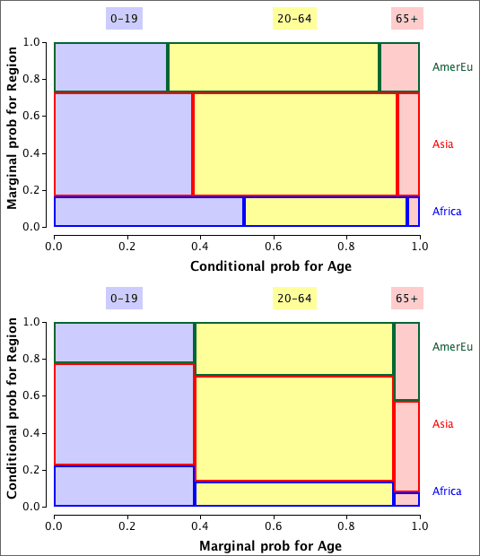
Note that the areas are the same in both diagrams — they are simply rearranged.
Marginal and conditional probs can be found from joint probs (and vice versa)
We have used three types of probability to describe a model for two categorical variables — the joint probabilities, the marginal probabilities for the two variables and the conditional probabilities for each variable given the value of the other variable. These sets of probabilities are closely related. Indeed, the model can be equivalently described by any of the following.
Each can be found from the others:
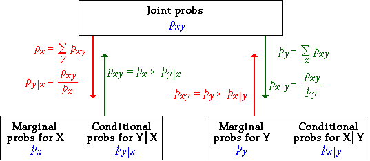
Bayes theorem
In particular, note that it is possible to obtain the conditional probabilities for X given Y, px | y, from the marginal probabilities of X, px, and the conditional probabilities for Y given X, py | x. This can be expressed in a single formula that is called Bayes Theorem, but it is easier in practice to do the calculations in two steps, obtaining the joint probabilities, pxy, in the first step. There are several important applications of Bayes Theorem.
Accuracy of medical diagnostic tests
There are two types of error in a test for a medical condition:
Consider a diagnostic test with
p negative | disease = 0.05 ppositive | no disease = 0.10
From these, we can also write
p positive | disease = 0.95 pnegative | no disease = 0.90
We will also assume that 10% of people who are given the test have the disease,
p disease = 0.10
From this information, we can find the probabilities of having the disease, given the result of the diagnostic test,
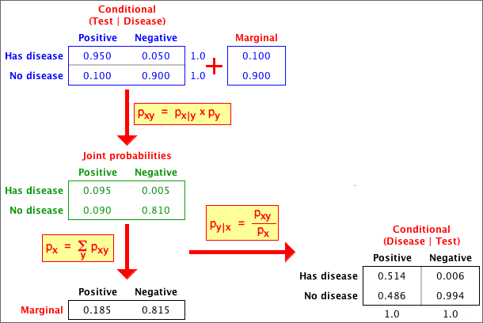